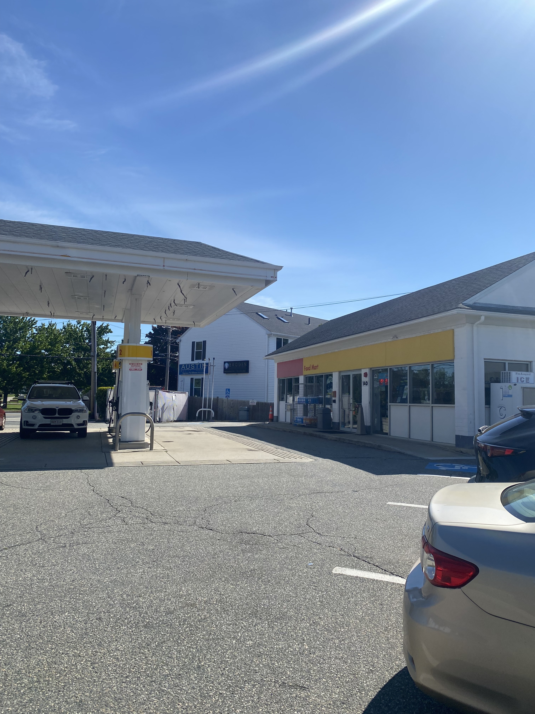
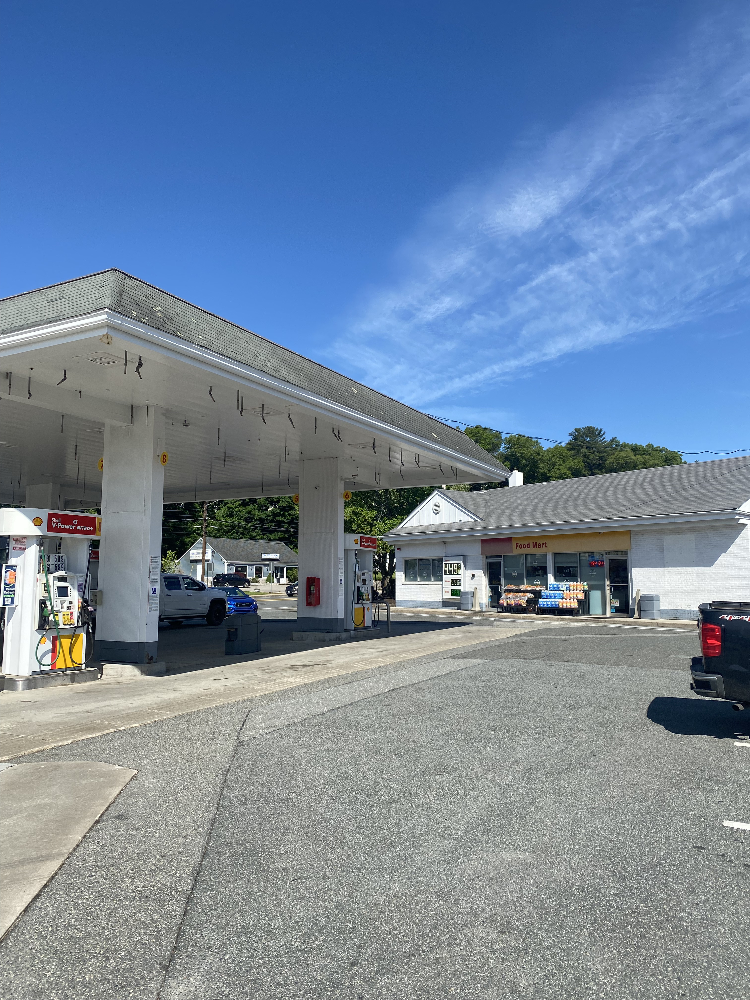
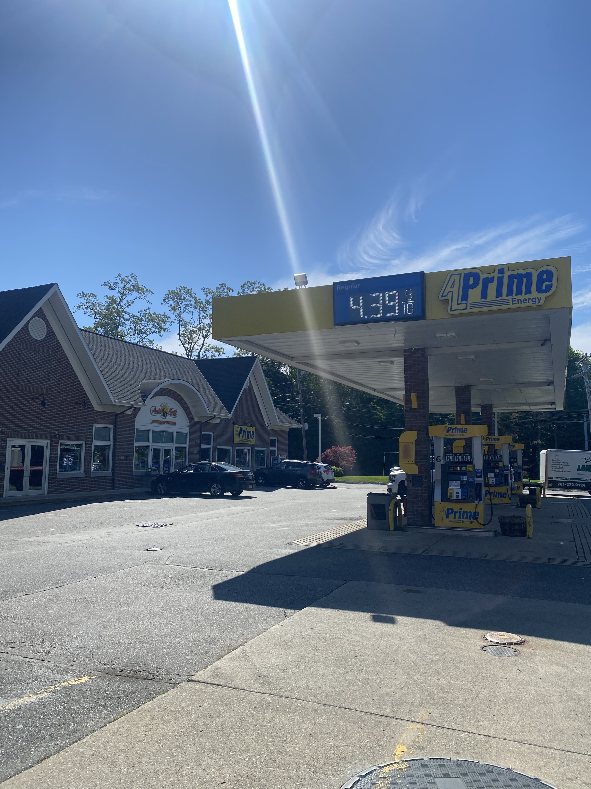
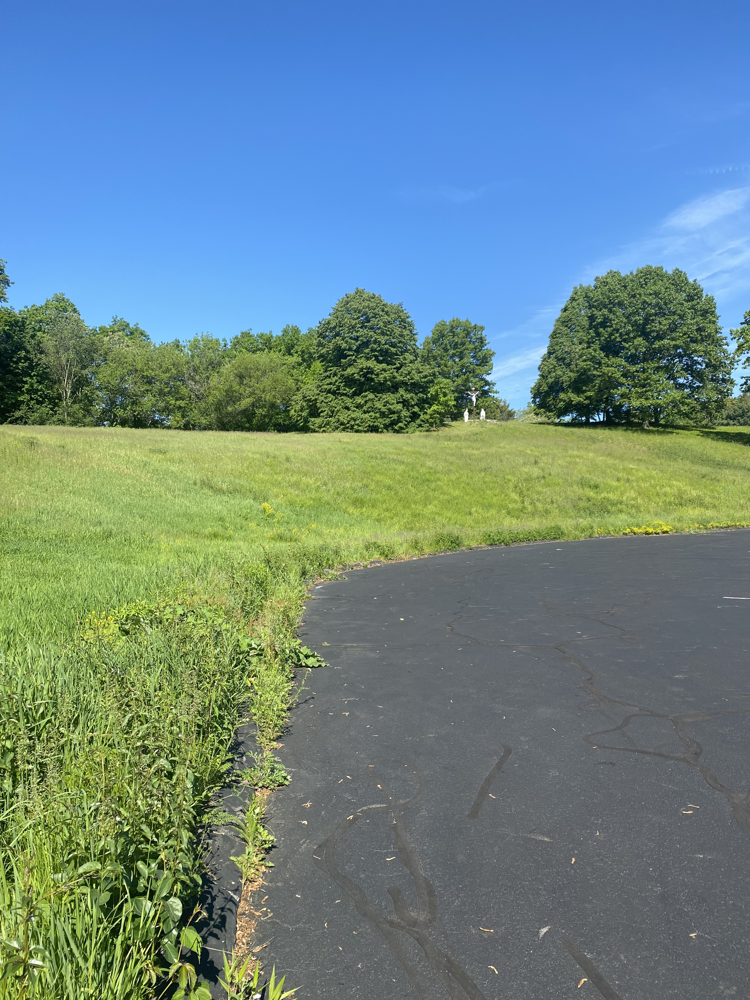
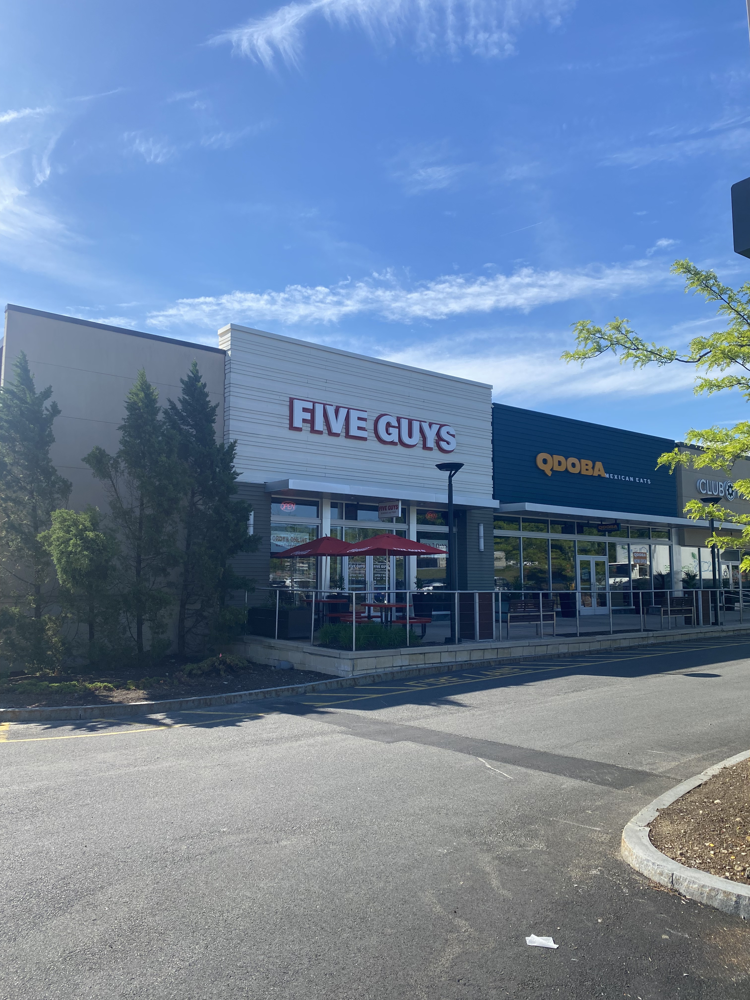

Burlington, MA is a town located roughly 20-25 from downtown Boston. It is a decently-sized suburban community featuring hundreds of businesses and middle-class to upper-middle-class housing. While most articles online about Burlington mention places such as the Burlington Mall or the town museum, I am here to introduce five underrated or not widely-known places of ol' Burly.
-
Shell Gas Station 1

Right next to the town common and up the road from the high school is a Shell gas station. This particular gas station may not be the lowest in town, but the prices are moderate. As of May 26th, 2026, the price at this gas station is $4.499, which is only $0.018 higher than the current Massachusetts average (according to gaspriceslive.com). Located inside is a small convenience store filled with your typical snacks and drinks. This particular location is open 24 hours a day as well. The best thing this gas station has going for it, however, is its almost ideal location as it resides in the center of Burlington on a major roadway. The location of the next entry on this list may have the second-best location for a gas-station in Burlington!
-
Shell Gas Station 2

Located a little over half a mile from the first entry on this list is ANOTHER Shell gas station! Surprisingly, the prices at this gas station are identical to the ones located up the street. The inside of the building is a little bigger, however, which means a slightly greater variety of food and drinks. This gas station's location is along the same busy road in Burlington. It is also in an area of a decently-sized commercial area, being near a Dunkin, a supermarket, a few banks, and several shopping plazas. One could argue THIS location is more ideal than the former. However, I still think the first Shell Gas Station is better suited. This location is also open 24 hours per day.
-
A.L. Prime Energy Gas Station

Now I know what you may be thinking: "Is this list going to be all gas stations?" And the answer is no. With that being said, this gas station may be one of the best gas stations in Burlington in terms of price. As of May 26th, 2026, the price is $4.399, $0.082 less than the Massachusetts average (gaspriceslive.com). Located on the same road as the first two entries on this list, one may consider driving a little bit farther in order to save a bit on refueling one's vehicle. This location also has a building of convenient snack and drink choices.
-
St. Margaret's Church Parking Lot


While I cannot speak for the status of St. Margaret's church, I can speak for its parking lot. It is a spacious lot with easily over a hundred spots. It is even next to a large hill! Now, for legal purposes, I will add a disclaimer here that I am not advocating for anything that I will be describing henceforth. I am speaking in pure hyptheticals and in no way condone loitering or tresspassing on private property. With that being said, this lot is excellent for teaching someone how to drive. It is usually empty during the week, which allows a perfect opportunity for someone to test drive an automobile for the first time. And for people who have experience in driving vehicles and are seeking a thrill, one could drift across the lot after a fresh snowfall in the winter time. Even better is the aforementioned hill which is ideal for sledding down. However one risks crashing into a snowbank at the bottom, or a car if it is parked close to the end of the hill. Overall a very fine lot.
-
Five Guys Burgers and Fries

Last but not least on this list is a place I consider one of the best burger chains to this day: Five Guys. This place is located a bit off I-95 in another dense commerical area. This place has been in business for at least ten years now and their food hits time and time again. I highly recommend this place if you like burgers, fries, and feeling gluttonous.